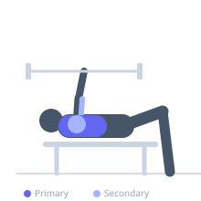

Exercise guide / Smith Machine Decline Bench Press
Smith Machine Decline Bench Press
The Smith Machine Decline Bench Press uses a decline angle (feet elevated above head) to target the sternal and lower fibers of the pectoralis major. The fixed bar path of the Smith machine provides stability and allows training without a spotter, making the decline angle more accessible than with a free barbell.
Primary muscles
pectoralis major sternal
Secondary muscles
pectoralis major clavicular
deltoid anterior
triceps lateral head
triceps medial head
Stabilizers
pectoralis minor
Equipment
Smith Machine
Adjustable Bench (Incline / Decline)


Starting position
- Set an adjustable bench to a decline angle (feet 15-30 degrees higher than head). Secure feet under the ankle pads. Position bar at lower chest height in the Smith machine.
Setup
- Lock ankle pads before lying back. Adjust the Smith machine bar height so it aligns with the lower sternum when the bench is at the decline angle chosen.
Steps
- Step 1: Unrack by rotating the bar off the hooks.
- Step 2: Lower the bar to the lower chest with controlled speed.
- Step 3: Press back to full extension along the fixed bar path.
- Step 4: Rerack carefully after the final rep.
Coaching cues
- Press up and slightly back — do not press straight up
- Squeeze the lower pecs at the top
Breathing
- Inhale before descent. Exhale through lockout.
Range of motion
- Full touch to lower sternum; full elbow extension.
Tempo
- 3-1-1-0
Common mistakes
- Steep decline causing blood to rush to the head — limit to 15-20 degrees for most people
- Failing to secure feet before lying back
Safety
- Always ensure ankle pads are secured before getting into position
- Avoid very steep declines if you have high blood pressure
Training
- strength: 5–8 reps
- hypertrophy: 8–15 reps
- strength: 3–5 sets
- hypertrophy: 3–4 sets
- Rest: {'strength': 180, 'hypertrophy': 90}